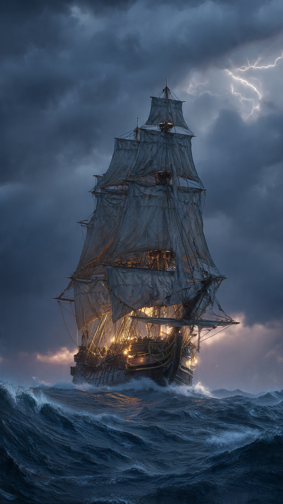
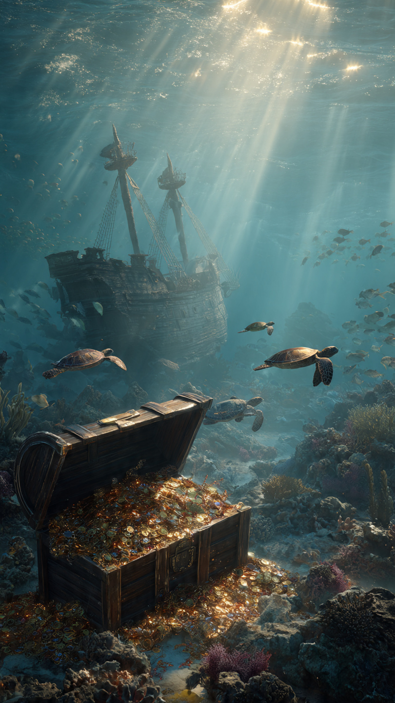

```html id="w7e3kd"
السفينة التي غرقت ومعها كنوز لا تُقدّر بثمن | قصص تاريخية
```
في صباح يومٍ من أيام عام 1622، أبحرت سفينة حربية إسبانية ضخمة من ميناء هافانا في كوبا، متجهة إلى إسبانيا.
كان اسمها نويسترا سينيورا دي أتوتشا (Nuestra Señora de Atocha).
ولم تكن سفينة عادية.
بل كانت واحدة من أهم سفن أسطول الكنوز الإسباني، محملة بثروات هائلة جُمعت من المستعمرات الإسبانية في العالم الجديد.
كان على متنها الذهب والفضة والأحجار الكريمة والمجوهرات، إضافة إلى بضائع ثمينة مخصصة لخزائن التاج الإسباني.
في ذلك العصر، كانت إسبانيا تُعد واحدة من أقوى الإمبراطوريات في العالم.
وكانت السفن تعبر المحيط الأطلسي بانتظام، ناقلة الكنوز المستخرجة من مناجم أمريكا الجنوبية والوسطى.
لكن هذه الرحلات كانت محفوفة بالمخاطر.
فالعواصف، والشعاب المرجانية، والقراصنة، جميعها كانت تهدد السفن في كل رحلة.
ولهذا كانت سفن الكنوز تسافر غالبًا ضمن أساطيل كبيرة للحماية.
وبعد أيام قليلة من الإبحار، تغير الطقس فجأة.
هبت عاصفة عنيفة على الأسطول قرب جزر فلوريدا كيز.
ارتفعت الأمواج، واشتدت الرياح، وفقدت السفن السيطرة على مسارها.
واصطدمت بعض السفن بالشعاب المرجانية، بينما غرقت أخرى في أعماق البحر.
وكانت سفينة أتوتشا من بين السفن التي اختفت تحت الماء.
غرقت السفينة ومعها كنوز هائلة لم يتمكن أحد من إنقاذها.
ومات معظم من كانوا على متنها.
وبقي مكان الحطام مجهولًا لقرون طويلة، حتى أصبح واحدًا من أشهر ألغاز البحار.
لكن...
هل تمكن أحد من العثور على هذه الكنوز؟
وما الذي كشفته عمليات البحث بعد أكثر من ثلاثة قرون؟
هذا ما سنعرفه في الجزء الثاني.
📷 الصورة رقم 1

بعد غرق سفينة أتوتشا عام 1622، حاولت السلطات الإسبانية العثور عليها وإنقاذ الكنوز التي كانت تحملها.
وأرسلت فرقًا من الغواصين مستخدمة الأدوات المتاحة في ذلك العصر.
لكن البحر كان عميقًا، والتيارات البحرية قوية، كما أن موقع الحطام لم يكن معروفًا بدقة.
وبعد سنوات من المحاولات، توقفت عمليات البحث، وبقيت السفينة مفقودة في أعماق المحيط.
ومرت أكثر من ثلاثة قرون دون أن يعرف أحد مكانها.
حتى جاء الباحث الأمريكي ميل فيشر، الذي كرّس سنوات طويلة من حياته للبحث عن الحطام.
واجه صعوبات مالية، وعواصف بحرية، وفشلًا متكررًا، لكنّه لم يتخلَّ عن حلمه.
وكان يردد دائمًا لفريقه عبارة:
"اليوم هو اليوم!"
إيمانًا منه بأن الاكتشاف قد يحدث في أي لحظة.
وفي عام 1985، تحقق الحلم أخيرًا.
فقد تمكن فريق ميل فيشر من العثور على الجزء الرئيسي من حطام السفينة بالقرب من جزر فلوريدا كيز.
وكان الاكتشاف مذهلًا.
عُثر على سبائك فضة، وعملات ذهبية، ومجوهرات مرصعة بالأحجار الكريمة، وأدوات تاريخية بقيت محفوظة تحت الماء لأكثر من 360 عامًا.
وأصبحت أتوتشا واحدة من أشهر سفن الكنوز المكتشفة في التاريخ.
لكن العثور على الكنوز لم يكن نهاية القصة.
فقد بدأت معارك قانونية طويلة حول ملكية ما عُثر عليه.
وتدخلت جهات مختلفة للمطالبة بحقها في الكنوز، قبل أن تصدر المحاكم الأمريكية أحكامًا حسمت النزاع بعد سنوات.
لكن...
كم بلغت قيمة الكنوز التي وُجدت؟
وهل انتهى البحث عن كنوز أتوتشا حتى اليوم؟
هذا ما سنعرفه في الجزء الثالث والأخير.
📷 الصورة رقم 2

بعد استخراج جزء كبير من محتويات السفينة، قدّر الخبراء قيمة الكنوز التي عُثر عليها بمئات الملايين من الدولارات وفقًا للأسعار الحديثة.
وضمت الكنوز آلاف العملات الذهبية والفضية، وسبائك ضخمة من الفضة، وقطعًا من الذهب، ومجوهرات مرصعة بالزمرد، إضافة إلى أدوات ومقتنيات تاريخية تعود إلى القرن السابع عشر.
ولا تكمن أهمية هذه الكنوز في قيمتها المادية فقط، بل في قيمتها التاريخية أيضًا، لأنها تقدم صورة واضحة عن التجارة البحرية والإمبراطورية الإسبانية في ذلك العصر.
ورغم الاكتشاف الكبير الذي تحقق عام 1985، يؤكد الباحثون أن أجزاء من الحطام وربما بعض المقتنيات ما زالت مدفونة في قاع البحر.
فالعواصف والتيارات البحرية فرقت محتويات السفينة على مساحة واسعة، وما زالت عمليات البحث الأثري البحري مستمرة في بعض المناطق باستخدام تقنيات حديثة.
ولهذا لا يستبعد الخبراء العثور على قطع جديدة في المستقبل.
كما أصبحت قصة سفينة أتوتشا مثالًا عالميًا على أهمية علم الآثار البحري.
فبدلًا من النظر إلى الحطام باعتباره مصدرًا للكنوز فقط، يدرسه العلماء اليوم لفهم طرق الملاحة، والتجارة، وصناعة السفن، وحياة البحارة في القرن السابع عشر.
فكل قطعة تُستخرج من أعماق البحر تحمل معلومة تاريخية لا تقل قيمة عن الذهب نفسه.
وهكذا بقيت سفينة أتوتشا واحدة من أشهر سفن الكنوز في التاريخ.
فقد اختفت في لحظات وسط عاصفة عنيفة، ثم ظلت مفقودة أكثر من ثلاثة قرون قبل أن يكشف البحر عن أسرارها من جديد.
وتذكرنا قصتها بأن بعض أعظم اكتشافات التاريخ لا تكون مدفونة تحت الرمال... بل في أعماق المحيطات.
🚢💎 انتهت القصة 💎🚢